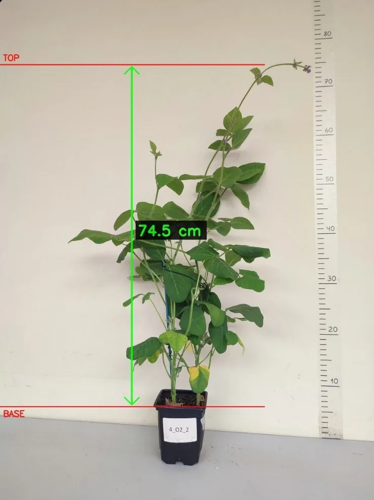
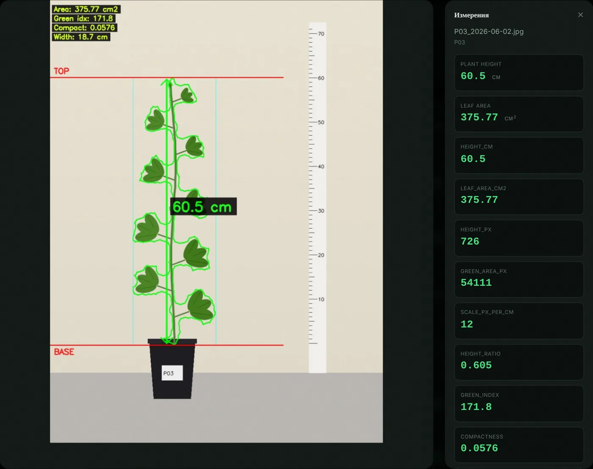
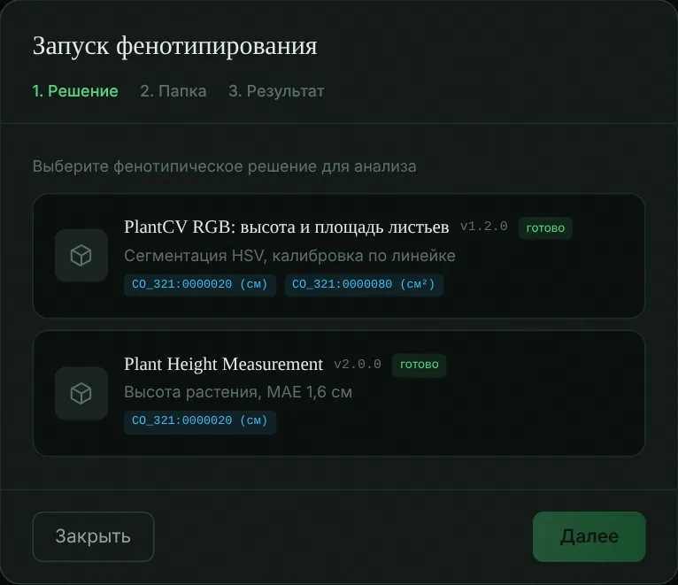

Снимок растения превращается в измерение, статистику и отчёт
PhenoPlant — веб-сервис для селекционеров и лабораторий. Он принимает снимки из климатических камер и теплиц, фиксирует время съёмки и контрольную сумму каждого файла, измеряет высоту растения и площадь листьев, сравнивает варианты опыта с контролем и выгружает результаты в PDF и XLSX.

Проект поддержан Фондом содействия инновациям в рамках программы «Студенческий стартап» федерального проекта «Платформа университетского технологического предпринимательства».
Ручные замеры не успевают за селекцией
В одной камере ускоренной селекции за опыт выращивают больше тысячи растений. Высоту меряют линейкой, данные записывают в журналы и разрозненные таблицы, и связь замера с условиями выращивания теряется.
растений в одной климатической камере за эксперимент
- ошибки переписывания и потерянный контекст опыта;
- невозможно проверить, каким снимком подтверждён результат;
- статистику и отчёт для каждого опыта собирают вручную.
От съёмки до отчёта в одном сервисе
Съёмка
Камеры в климатической камере или обычный смартфон. В кадре растение и мерная линейка.
Загрузка
Время съёмки берётся из EXIF, для файла считается SHA-256, снимок привязывается к растению по имени файла.
Анализ
Исследователь выбирает метод фенотипирования. Алгоритм измеряет высоту и площадь листьев в сантиметрах.
Статистика и отчёт
Сравнение вариантов с контролем, динамика по датам, скорость роста. Выгрузка в PDF, XLSX, CSV и BrAPI JSON.
Высота и площадь листьев с проверкой различий
Для каждого признака сервис считает среднее, стандартное отклонение, коэффициент вариации и 95 % доверительный интервал по группам обработки, а различие с контролем проверяет t-критерием Уэлча.
Высота растения
От основания до верхней точки растения, масштаб по линейке в кадре.
Площадь проекции листовой поверхности
Площадь зелёной массы на снимке после сегментации в цветовом пространстве HSV.

Что входит в платформу
Снимки с привязкой ко времени
Время съёмки из EXIF с часовым поясом, иначе из даты файла. Пакетная загрузка, отчёт по каждому файлу, повторные файлы не сохраняются дважды.
Безопасное хранение
Контрольная сумма SHA-256 сверяется при каждом чтении и перед анализом. Файлы выдаются по временным подписанным ссылкам, действия пишутся в журнал.
Методы фенотипирования
Алгоритмы подключаются как отдельные решения в контейнерах. Исследователь выбирает метод при запуске анализа и видит, какие признаки он измеряет.
Статистика опыта
Описательная статистика, сравнение с контролем, динамика по датам съёмки, абсолютная и относительная скорость роста каждого растения.
Отчёты PDF и XLSX
PDF с таблицами, графиками и аннотированными снимками. Книга Excel с листами результатов, статистики и динамики с диаграммами. Архив с манифестом контрольных сумм.
Климатические камеры и стандарты
Снимок связывается с показаниями датчиков камеры в момент съёмки. Данные описаны переменными CropOntology и выгружаются по BrAPI v2.1.



Кому нужен PhenoPlant
Мировой рынок цифрового сельского хозяйства оценивался в 22 млрд долларов в 2023 году и, по прогнозу, вырастет до 43 млрд к 2030 году. Сегмент фенотипирования растений занимает около 3,5 млрд долларов. Доли целевых сегментов показаны ниже.
Агрокомпании и селекционные центры
Ускорение отбора устойчивых сортов, оптимизация условий выращивания в теплицах и вертикальных фермах.
НИИ и университеты
Воспроизводимые эксперименты в агробиологии, генетике и селекции растений; обучение студентов.
Производители климатических камер
Программная часть для камер: фенотипирование «из коробки» по лицензии.
Облачная подписка или установка у заказчика
- доступ к веб-сервису в облаке
- загрузка снимков и анализ двух признаков
- отчёты PDF и XLSX
- до 6 камер и 5 пользователей
- интеграция с климатическими камерами
- сопровождение и обновления
- установка в контуре организации
- поддержка и обновления: 18 % стоимости лицензии в год
- скидка 10–15 % при подключении более 6 камер
Опция «Цифровой двойник»: моделирование роста растений по накопленным данным
+95 000 ₽/месНастройка под требования заказчика и интеграция с его оборудованием
от 200 000 ₽Цены ориентировочные; итоговая стоимость зависит от числа камер и состава работ.
Кто делает проект
Сергей Килеев
Руководитель проекта. Архитектура платформы, серверная и клиентская части, алгоритмы измерения по снимкам.
- Data Scientist для моделей компьютерного зрения
- Full-stack разработчик
- агроном-консультант для валидации данных
- специалист по продажам
Покажем сервис на ваших снимках
Пришлите несколько фотографий растений с линейкой в кадре, и мы покажем измерения и отчёт по вашему опыту.
- [укажите e-mail проекта]
- Телефон
- [укажите телефон]
- Telegram
- [укажите контакт]
- Компания
- ООО «[название]», ИНН [ИНН]